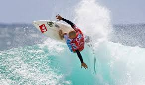

does-switch-slater-surf-better-than-you
{kind=link}
I’m going to ask you to look yourself in the mirror and ask a very serious and important and possibly ego-destroying question. Does Slater surf better than you even when he goes switch? Look at him in this Insta clip. First, the 55-year-old man transitions, admittedly awkwardly, but good lord that has to be hard, from regular to goofy mid-wave. Then, Slater, 65 years old, pulls into the tidy artificially-produced tube at the Surf Ranch and calmly exits. Next, Slater and his 75-year-old body lays into a smooth drop wallet/cutback carve. Now ask yourself, could you paddle out right now, or on your best day, tuck into a clean little runner, emerge, than wrap a clean carve back into the pocket like that? That’s pretty much the hurdle one must leap in order to enter into the Elysian fields populated by good surfers. Actually, nevermind doing Slater’s little combo switch. Can you do that at all? Would switch Slater beat you in a heat?
for more info - click here